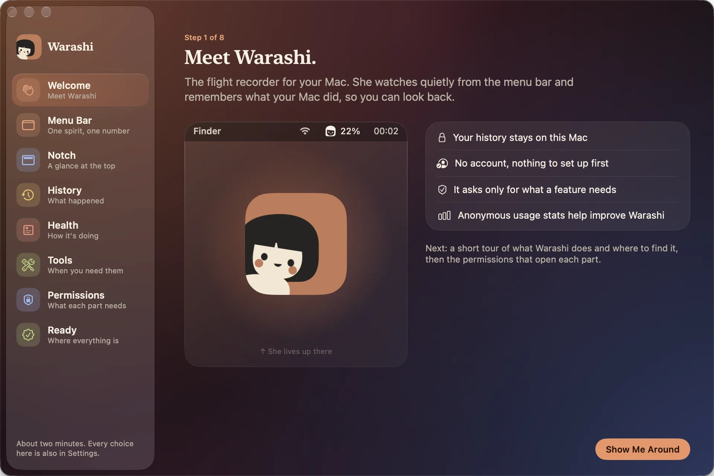

Warashi を初めて開くと、短い実践ツアーが案内します。左のリストは Warashi のウインドウと同じ地図で、どのステップもクリックで移動できます。各ページは本物をライブで見せ、その場で試せます。スイッチはすべて本物の設定で、何かが動くと緑のチェックが今どうなったかを伝えます。各ページにはあとで変更する場所と、このヘルプの該当部分を開くヘルプで詳しくもあります。所要時間は約2分で、どれもスキップできます。
- ようこそ
Warashiが何であるかと、4つの約束：履歴はMac内にとどまること、アカウントも事前の設定も不要なこと、機能に必要なものしか求めないこと、匿名の使用状況統計がWarashiの改善に役立てられること。案内してもらうをクリックします。

ページ1：はじめまして、Warashiです。 - メニューバー
精霊の横に表示する数値を選ぶと、本物のメニューバーがその場で変わります。注意が必要なものを表示をオンにすると、メモリ不足や高温のときに数値が警告に切り替わります。次に試す：メニューバーの精霊をクリックすると、メニューバーウインドウが開いたことをページが確認します。

2ページ：メニューバーの項目と、そのクリック。 - ノッチ
試す：ノッチ（別のディスプレイではアイランド）にポインタを合わせます。ダッシュボードが開くとページが気づき、できることを教えてくれます。下には、ひと目で、アイランド、ライブカウントダウンのスイッチと、2つの数値を入れ替えるボタンがあります。

ページ3：ノッチとアイランド。 - 履歴
フライトログの1日の例と、履歴の任意の瞬間をクリックする方法。最前面のアプリを記録をオンにすると各アプリの使用時間がわかり、ページが記録中であることと時間の表示場所を確認します。記録するのはアプリの切り替えだけで、ウインドウのタイトル、Web サイト、キー入力は記録しません。

4ページ目：履歴、フライトログ、アクティビティの記録（任意）。 - アラート
おすすめのアラートが4つ：CPU を多く使うアプリ、急に増えるメモリ、埋まっていく起動ディスク、熱くなるバッテリー。どれかをオンにすると、macOS が通知の許可を一度だけ尋ねます。許可するとテストを送るで見本が表示され、アラートが届くことをページが確認します。通知がオフなら、オンにする場所を案内します。

5ページ：アラート。 - 状態
メニューバーウインドウの充電の上限カードをライブで。充電の上限をオンにすると、どこで充電が止まるかをページが確認します。続いてチェックアップ、Mac が遅いのはなぜ？、ストレージへの行き方。

6ページ：状態。 - 休憩
本物の休憩画面のミニチュア。休憩をオンにし、リズム（20-20-20、ポモドーロ、50分と10分、ディープワーク）を選び、姿勢を正すをオン/オフします。休憩を試すで本物の休憩が表示され（スキップまたは Esc で終了）、姿勢を正すを表示で姿勢のひと声が画面中央まで上がります。

7ページ：休憩。 - 背景ぼかし
背景ぼかしのライブプレビュー。試す：⌃⌥⌘F を押すと、ツアー以外がやわらかくぼけ、ページが確認します。アンビエントかディープを選び、必要ならポインタを振る操作をオンにします。

8ページ：背景ぼかし。 - ツール
1時間スリープさせないをオンにして試すと、Mac がスリープせず自動で止まることをページが確認します。続いてスピードテスト、画面とキーボードのクリーニング、名前でツールを探せる ⌘K。ツールをご覧ください。

9ページ：ツール。 - アクセス許可
Warashiはこれらがなくても動きます。それぞれがWarashiの一部を使えるようにします。どのカードにも用途と、オフ、あと少し、オンのどれかが表示され、システム設定で何かをオンにすると、ページはすぐにそれに気づきます。
- 通知：許可を押すと macOS が一度だけ尋ねます（アラートをオンにした場合は済んでいます）。アラートに必要です。
- システムヘルパー：オンにするを押してから、システム設定 › 一般 › ログイン項目と機能拡張でWarashiをオンにします（管理者が一度だけ承認します）。これにより、Warashiは好きな充電量で充電を止めたり、蓋を閉じたままMacをスリープさせなかったり、macOS自身のプロセスを見たりできるようになります。
- フルディスクアクセス：システム設定を開くを押し、リストでWarashiをオンにするか、アイコンをドラッグして追加します。するとストレージがディスク全体を一度に見られるようになり、チェックアップがTime Machineの最後のバックアップ日時を読めるようになります。読むのは名前、サイズ、日付だけで、ファイルの中身は決して読みません。Warashiを再起動しないとmacOSが反映しない場合は、Warashiを開き直すを押してください。ツアーはこのページに戻ってきます。
どれもスキップできます。2つは必要なときだけ尋ねます：ストレージでアプリを削除するときと、パスワードが必要な項目をゴミ箱から消すとき。

10ページ：アクセス許可（すべて任意）。 - 準備完了
オンになっているもの：ツアーで設定したものをその場で読み取り、それぞれの変更場所と一緒に表示します。もっと知る：ヘルプ、よくある質問、ガイド、新機能を、あなたの言語の warashi.app で開けます。覚えておきたいショートカット、履歴が途切れないためのログイン時に Warashi を開く、そして監視を開始。

11ページ：オンのものと、さらに知る場所。
うまくいかないときは
- 精霊のクリックやノッチを指しても完了にならない：メニューバーに Warashi の項目が表示されていること、ノッチの横でひと目でがオンであることを確認してください。
- ⌃⌥⌘F を押しても何も起きない：ほかのアプリが同じショートカットを使っている可能性があります。ページのオンにするを使ってください。
- テストを送るで何も表示されない：システム設定 › 通知 で Warashi を許可してください。
- システムヘルパーが「あと少し」のまま： システム設定 › 一般 › ログイン項目と機能拡張を開き、バックグラウンドでの実行を許可の下でWarashiをオンにしてください。
- ツアーが表示されなかった： アプリケーションからWarashiを開き、設定 › 一般 › ようこそ画面をもう一度表示を選んでください。
詳しくはトラブルシューティングをご覧いただくか、adam@warashi.appまでメールでお問い合わせください。